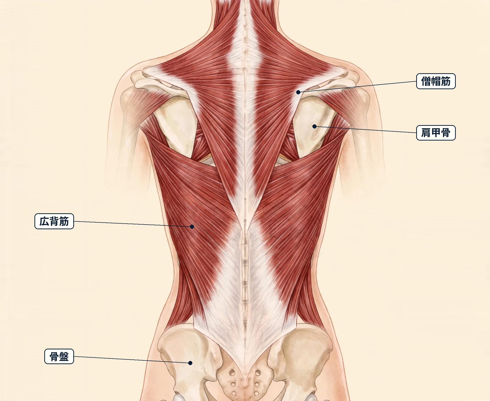

難波で気になる自律神経の乱れ感｜ストレスと日常の整え方、受診の目安
１．自律神経の乱れ感とは
自律神経は、呼吸・心拍・血流・体温・消化など、意識しなくても体が自動で調整している働きを担う神経の総称です。活動のときに働きやすい交感神経と、休息のときに働きやすい副交感神経があり、この二つの切り替えやバランスが、体の調子の感じ方と関わっていると言われます。
「自律神経の乱れ感」は正式な病名ではなく、はっきりした病気とは言えないのに、なんとなく調子が整わない感じを表す言葉として使われることがあります。感じ方としては、疲れが抜けにくい、眠りが浅い・寝つきが気になる、頭の重さや肩の張り、めまい感や立ちくらみ、動悸が気になる、お腹の調子が安定しない、気持ちが落ち着かない・いら立ちやすい、などが挙げられます。現れ方や程度は人によってさまざまで、同じ方でも日によって違うことがあります。
感じ方だけで、その背景を特定することはできません。この記事では、自律神経の乱れ感の一般的な解説、考えられる要因の例、日常で取り入れやすい整え方、そして先に医療機関へ相談したい目安を整理します。あくまで一般的な情報としてお読みください。
２．考えられる要因
乱れ感を感じやすくなる背景には、次のようなことが関係している場合があると言われます。
- 気持ちの緊張やストレスが続く日々：仕事の気がかりや人間関係、予定の詰め込みが続くと、体を休めている時間でも気持ちが切り替わりにくく、体の緊張が続きやすい方もいます。
- 眠りの不足や生活リズムのずれ：就寝・起床の時刻が日によって大きくずれる、夜更かしが続くといった日々は、体内時計のリズムの感じ方と関わる場合があります。
- 気温や気圧の変化：季節の変わり目や、天気の変化が大きい時期に、頭の重さやだるさと一緒に乱れ感が気になりやすい方もいます。
- 同じ姿勢や画面作業の続き方：デスクワークなどで体を動かす機会が少ない日が続くと、肩や首の張りと重なって、全体の調子の悪さとして意識する方もいます。
- 食事のリズムの乱れ：食事を抜く、食事の時刻がまちまちになる、夕方以降のカフェインが多いといった習慣が、眠りの感じ方と重なる場合があります。
- 体を動かす機会の少なさ：歩く時間や軽い運動の機会が減ると、夜の過ごし方や眠りの感じ方に影響する場合があると言われます。
- 休む時間を後回しにしがちな過ごし方：忙しさが続いて自分の休息が後回しになる日々が重なると、疲れがたまった感じが抜けにくい方もいます。
これらは一例であり、当てはまるものがあっても、それがご自身の感じている乱れ感の背景であると決めつけることはできません。
３．日常で取り入れられるセルフケア
どれも特別な道具はいりません。その日の体調に合わせて、無理のない範囲で続けやすいものから取り入れてみてください。背中の筋肉の重なり（図1）と、前面の経絡の流れ（図2）も参考にしてください。
- 起床の時刻をそろえる：できる範囲で毎日同じくらいの時刻に起き、朝の光を浴びることが、生活リズムを意識するきっかけになると言われます。
- 息をゆっくり吐く時間をつくる：仕事の合間や寝る前に、肩の力を抜いて、吐く息を長めにする呼吸を数回繰り返す方もいます。めまいなどを感じたら中止してください。
- 湯船につかる：シャワーだけで済ませず、ぬるめのお湯につかって体を温める時間を、夜の過ごし方に取り入れる方もいます。
- 軽く体を動かす：通勤や買い物のついでに歩く、肩や首まわりをゆっくり伸ばすなど、無理のない小さな動きを取り入れる方もいます。痛みが強まる動きは避けてください。
- 画面や仕事から離れる区切りをつくる：寝る前の画面時間を区切る、休憩中は窓の外など遠くを見るなど、気持ちを切り替える区切りをつくる方もいます。
- 予定にゆとりを持たせる：忙しい日が続くときは、予定を詰め込みすぎない、早めに休む時間をつくるなど、過ごし方を調整する方もいます。
- 感じ方をメモする：眠りの様子や体調の波を簡単に記録しておくと、ご自身のパターンに気づきやすくなります。医療機関へ相談する際の材料にもなります。


４．受診の目安（こんなときは医療機関へ）
次のような場合は、セルフケアやサロンでのケアより先に、内科などの医療機関への相談をご検討ください。
- 動悸や息苦しさ、胸の違和感が繰り返し起こる
- めまいやふらつきが強く、倒れそうになる、または実際に倒れたことがある
- 眠れない状態や日中の強い眠気が数週間以上続いている
- 気分の落ち込みや不安が強く、長く続いている
- 発熱を伴う、または短期間で体重が大きく増えた・減った
- 強い頭痛や、手足のしびれ・動かしにくさを伴う
- 症状が長く続いている、または少しずつ強くなっている
これらは一例です。似た感じ方の背景に、甲状腺や貧血、血圧の変化、更年期の変化など、体の内側の不調が関係する場合もあると言われます。当てはまる場合や、少しでも気になる症状がある場合は、自己判断せず医療機関にご相談ください。服用中のお薬について気になることがある場合は、自己判断でやめず、処方した医師や薬剤師にご相談ください。
５．ステラシリウス（難波）のご案内
ステラシリウス（難波）は、月〜土 17:00〜22:00（日曜休み）に営業する女性専用サロンです。カウンセリングで当日のお悩みをうかがい、肩・首まわりや背中を含めた体の状態を見ながら、オイルマッサージと美容整体を組み合わせた90分 10,000円（税込）のコースをご用意しています。完全個室で、シャワー完備のため、施術の前後に汗やオイルを流してからお帰りいただけます。お仕事帰りの夜の時間に、体をほぐしてゆったり過ごす休息の時間としてご利用ください。なお、ステラシリウスは近日開院予定のため、ご予約の受付はまだ開始していません。また、当サロンはリラクゼーションを目的としたサロンで、医療行為は行いません。自律神経の乱れ感に関する治療を行うものではありませんので、「受診の目安」に当てはまる場合は、まず医療機関へご相談ください。